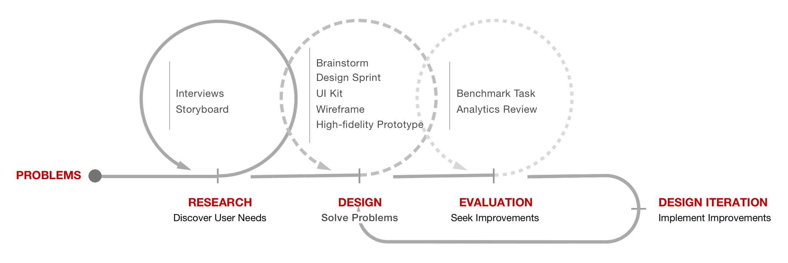
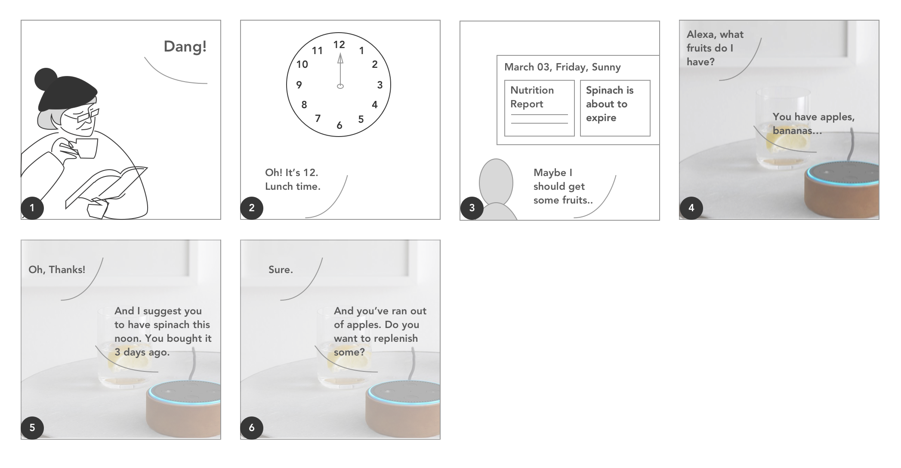
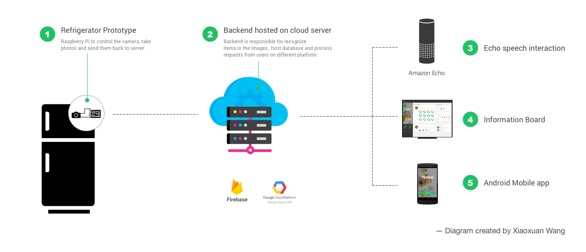
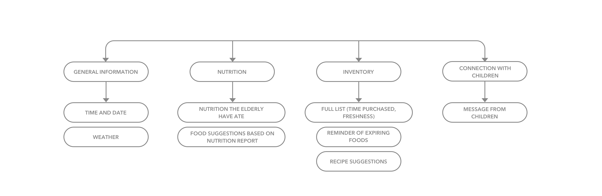
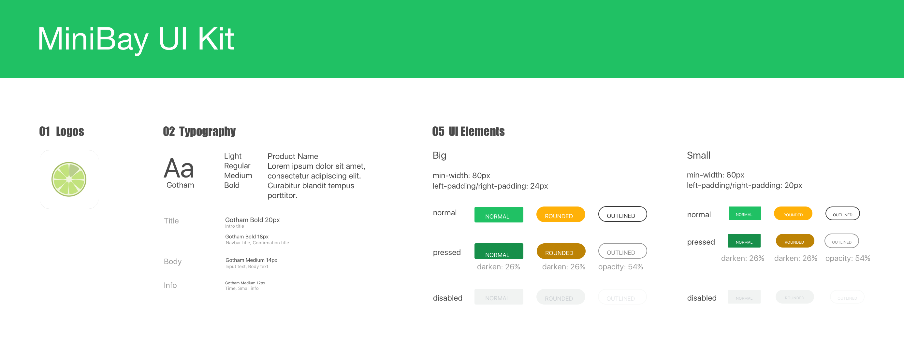
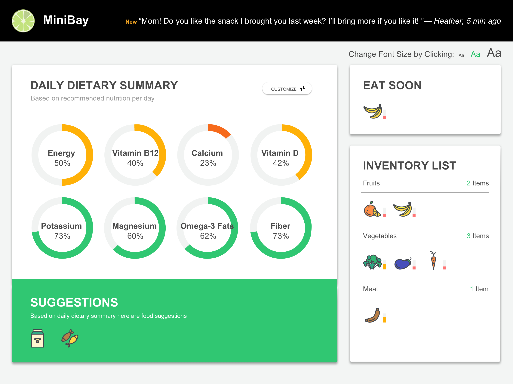
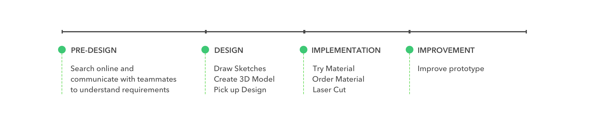
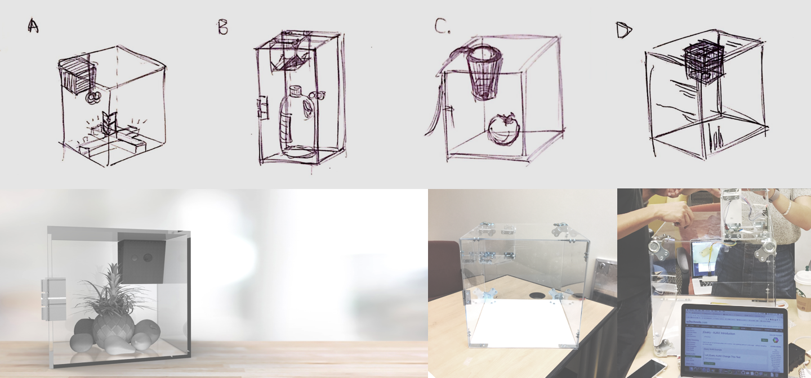

OVERVIEW
Problem Space
We all care about our elderly parents and grandparents. We want them to live happily and healthily. However, our own busy schedule prevents us from giving them the effective care they deserve. We are away from their everyday life. Unaware of their tastes and needs.
On parents’ side, they are suffering from deteriorated health condition and want to keep a healthy diet. However, they always forget when they purchase fresh produce which makes it difficult to control the food quality. They also suffered from small text, complicated design of mobile phones which are not designed for them.
So we propose Minibay, a system designed to connect young people and their elderly family members, delivering the quality of life through technology.
Methodology
{kind=link}
Outcomes
General Ideas
Minibay consists of four parts, the smart refrigerator, the dashboard on a big screen, the alexa app and a mobile app used by children.
- The smart refrigerator tracks food consumption and replenishment through image recognition. It will pass on the data to our database which which be used by the dashboard displayed on a big screen and the mobile app on children’s side and.
- The dashboard displays the nutrition report based on consumption status of foods in refrigerator. It also displays the freshness of foods and will recommend healthy diet based on the consumption. Or if parents have experience with voice interaction they can also choose to ask Minibay any questions relate to their food storage, nutrition status or diet recommendation.
- The mobile app is used by children. They will be able to see the real-time food consumption status and the nutrition report. Even more, if children find some foods are depleted or not fresh enough they can make a shopping list and bring the foods to their parents in the next visit!
Please watch the video to understand more about the general concept!
Working Demo
RESEARCH
Limited by the time frame of this project we needed to specify the user needs and design needs within one week. However, we are very different from our target user and it is difficult for us to imagine their life. So we decided to conduct interviews to understand them. Each of our team member made a call to our grandparents, asking them how they keep the inventory, what's their concerns for their health and diet, how's their experience with mobile app and their relationship with their children. We then made a storyboard to specify the scenario and major user needs.
The Elderly
One group of our target User is the elderly who is over 70.
{kind=link}
User Needs
- Instructions on a healthy diet. (freshness of foods, nutrition/dishes suggestions)
- The elderly friendly interface.
- Connection with children.
Storyboard
As seen below, Mary is enjoying reading a book. Suddenly she hears the clock ringing and realizes it is 12 P.M. She decides to have something for lunch. "Uhmm, recently I always feel tired I should pay more attention to my health." She thinks and carefully reads the nutrition report on the big screen and see she barely had any vitamins this week. So she asks Alexa to open Minibay to see what fruits she has in her refrigerator. Minibay also gives her healthy lunch suggestions based on her inventory.
{kind=link}
After Interviews How We Integrate Our Findings and Shape Our Product?
Semi-structured interviews always bring us overwhelming details. A common way to get key insights is affinity diagram. However, we want a more quick and dirty way which clearly explains the scenario. The first idea came to our mind was user journey map. But there wasn't standard procedure in everyone's life. So we finally decided to make storyboard. In the discussion of the story we can easily retrieve many details from interviews and the scenario makes it easier to recognize key user needs. It is also good for us to sell our ideas to the others.
{kind=link}
{kind=link}
DESIGN
Design Needs and Product Structure
In the storyboard we could clearly see we needed a dashboard + a Alexa app for parents side and a mobile app for children side. We also needed a refrigerator prototype to monitor inventory of foods and update the database. So we discussed the product structure (shown as below) and split up the work to explore the a feasible way to make it work.
{kind=link}
Information Architecture
In our team, one of my major responsibility was the dashboard design for the elderly. I started it from the user needs (instructions on a healthy diet, the elderly friendly interface and connection with children) and further listed out the functions. I also checked the generic dashboard design and decided to add general information such as time, date and weather. I added these information because this project was not just about inventory management. It was more like an exploration of scenario of smart home. The dashboard won't be a pure simple display of inventory. It is very possible to become an integrated terminal for multiple smart home apps. The general information could help user understand that there is a higher level structure.
{kind=link}
UI Kit
When we started design we realized how important it is to have a style guide first. Each designer choosed very different font, decoration line, icons although we have discussed the design style and thought we reached a decision. We then created a UI kit which keeps the visual language consistent throughout different platfrom. Check Out Full Image
{kind=link}
Design Iterations
Original Design
Usually I would like to create a low-fidelity wireframe before the real design. However, the function of the dashboard is very simple and our team thought we should only have one main page to efficiently display the nutrition and inventory information. So I skipped the wireframe step and started design.
The dashboard should include four types of information: general information, nutrition, inventory and connection with children. General information is high-level information so I put them on very left. The nutrition information is the most important thing of dashboard because the elderly have suffered from impaired health condition and really take it seriously. So I put nutrition on top left and leave largest space for it. Inventory information connection info took up the rest of the page.

Major Problems
After first design I did a self-evaluation based on the design guideline for the elderly and found some major problems and further improved them in the next round of design.
1. Become Redundant Information after We Changed Platform
In the original design I kept general weather information because I wanted to give user a sense of the overall structure of Minibay app and the big screen home page. However, our team finally decided to use ipad pro as the platform. So I removed it since ipad have formed its structure.
2. Donut Chart Isn’t Large Enough
The elderly suffered from the impaired vision and motion therefore elements and between space should be large enough. I enlarged the donut chart and the other major elements since I decided to display the dashboard on ipad pro, a smaller screen than we expected at the begining. I also reduced the displayed nutrients since I conducted research and found there wasn’t that many important nutrients for the elderly.
3. "3 Days Left" Is Inaccurate
In the original design there was a number indicating the days before the item expired. However, for many fresh produce there isn’t a standard expire date. Thus, I decided to use a colorful bar to indicate the freshness of the item (green-“fresh”, orange-“expiring”, red-“expired”), which is more intuitive.
4. Non-essential Functions
In our research, few participants mentioned they would like to get recipe suggestions since it’s always hard to decide what to cook for lunch or dinner. However, the space of the screen is limited after we changed the platform. So I removed the non-essential functions due to minimalism.
Current Design
{kind=link}
How to design for the elderly?
In our team, we didn't have easy access to the elderly. So I did literature review to understand how the impaired health condition affects their ipad usage.
It turned out that the elderly have a blurred vision therefore need high contrast color scheme (expecially the elderly have poor performance with blue), adjustable font size. They also suffer from declined motor skills and have difficulties to hit and move elements. It made me pay attention to the between space of the elements.
I also need to consider the elderly's life stage. They have little exprience with current technology and the learning curve could be really steep for them. Simoutaneously they suffer from the impiared memory and cognition which makes it even more difficult to learn new things. A study I read mentioned that some the ealder people even didn't know how to use scroll bar and search field. It made me decide to remove the recipe suggestion section which leaves more space for inventory list. I also intentionally made every operation visible and provide clear instructions besides those elements.
Physical Prototype
As the only Industrial Design background student I was also responsible for the design of the physical prototype. In the process, I needed to collaborate with one of our team member, Jian Ruan (who is responsible for Raspberry Pi + database in our team). So before I started design I communicated with Jian to understand his requirements for the prototype. The requirements are listed below.
- 6cm x 6cm x 6cm space for Raspberry Pi.
- Good lighting (which could improve the performance of computer vision).
- Allow camera to capture as much view as possible.
After understanding the requirements I was wondering how could I complete it efficiently since I didn't have any experience with laser cut. I went to prototyping lab and met students there, asking them how they prepare their prototype/ where they purchase the materials/ other common problems. They gave me very useful suggestions. For instance, they suggested me to laser cut a sample prototype before cutting the major materials. On one hand it could help me understand the best power setting. On the other hand it could help me adjust the parameters on blueprints, avoiding wasting material. Keeping the tips in mind I started my design process which is shown below and finally made my prototype after several tries.
Design Process of Physical Prototype
{kind=link}
Sketches, 3D Model and Final Prototype
{kind=link}
How to design with unfamiliar technology?
Before this project I didn't have any experience with lasercut or 3D printing. So when I was assigned the task I was really confused how I should tackle it. At first I started it blindly by searching box design online. It gave me an overall understanding of the appearance of the box, the common mechanical structure, accessories and materials. With this knowledge I created sketches and asked feedback from Jian since he was responsible for linking it with Raspberry Pi. We talked about the technology we were going to use and came up with requirements which helped me redesign the prototype and made design decisions. The situation is similar when I started preparing the lasercut. I didn't have experience so I understand that it is very possible that I would make some mistakes. I needed to gather as much knowledge as possible to avoid severe mistake and started it as early as possible to ensure that I have enough time to fix the mistakes.
I believe that no one can make a perfect plan when they use unfamiliar technology. But we can do research online, consult experienced people to avoid most of problems. More importantly, we should always keep it in mind that mistakes are common. We don't need to worry too much about them. Just calm down and face it whenever it cames up and believe we are smart enough to solve them.